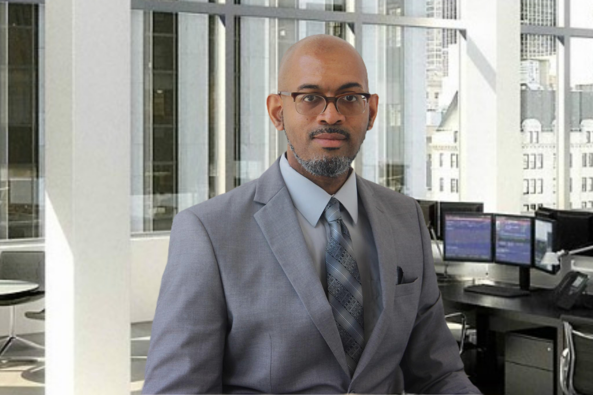
3+ Years at Intuitive Surgical (Feb 2022 - Jun 2025) • Service Operations Excellence • Quality Compliance Expert
Proven track record in robotic surgery systems, surgical instruments, and manufacturing operations
Building Excellence in Operations and Quality Compliance
February 2022 - June 30, 2025
Southaven, Mississippi
Leading quality compliance and technical maintenance for da Vinci robotic surgery systems. Enhanced GDP standard adherence by 30% and streamlined diagnostic processes, improving equipment issue localization by 25%.
2021 - 2022
Memphis, Tennessee
Startup manufacturing facility for spine surgery instruments. Specialized in surgical instrument processing, sterilization protocols, and quality control systems.
April 2018 - December 2021
Greater Memphis Area
Surgical instrument lifecycle management with 20% improvement in shipment accuracy through 5S methodologies. Expert in spine surgery instrument sterilization protocols.
November 2013 - December 2017
Greater Memphis Area
Statistical Process Control (SPC) procedures with 15% reduction in testing cycle time. Production experience as press and paint booth operator.
January 2000 - September 2012
Memphis, Tennessee
Ground operations coordination with focus on technical support and training programs. Extensive logistics and operational excellence experience.
Showcasing Excellence in Medical Device Operations
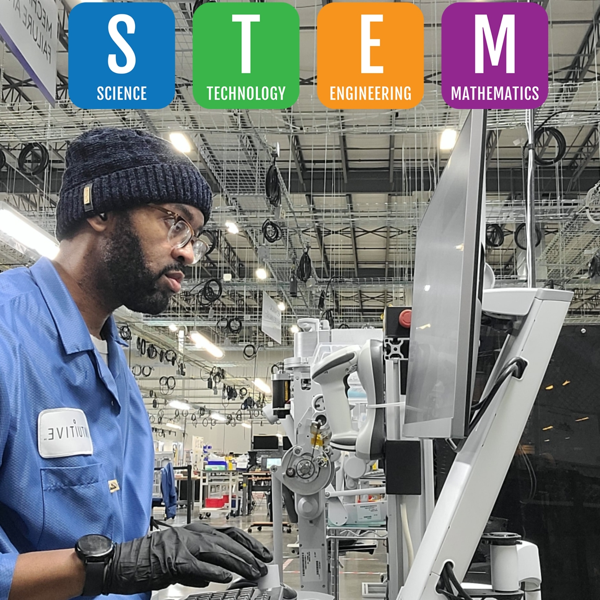
Leading quality compliance and technical maintenance for da Vinci robotic surgery systems with measurable improvements in GDP standards.
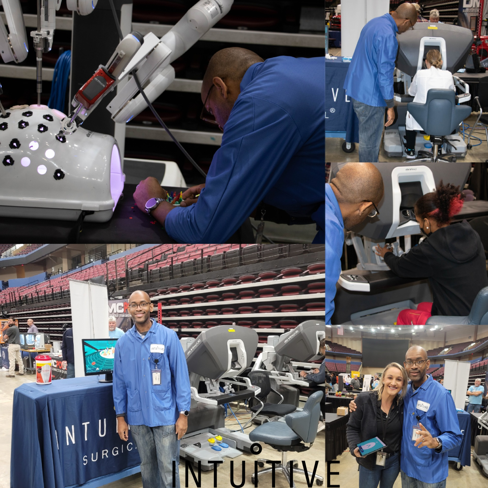
Representing Intuitive Surgical at career fairs, demonstrating da Vinci system capabilities and attracting top talent.
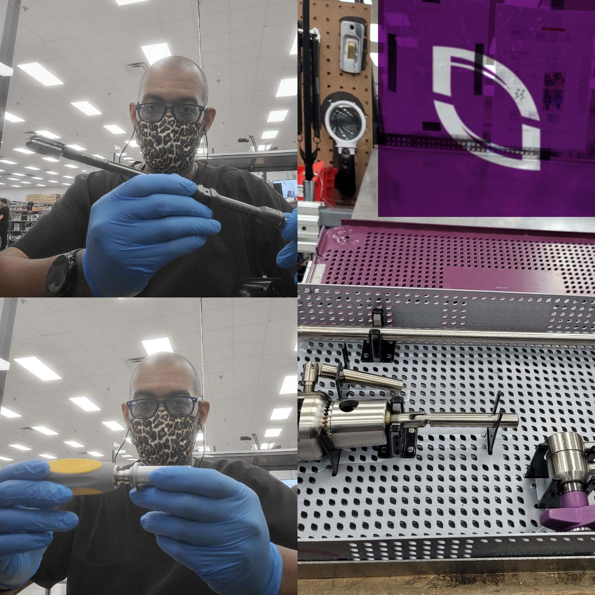
Surgical instrument lifecycle management with 20% improvement in shipment accuracy through 5S methodologies.
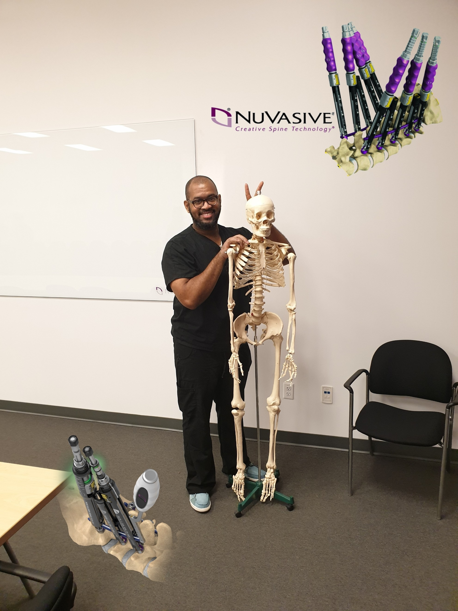
Specialized knowledge in spine surgery instrument sterilization protocols and quality assurance.
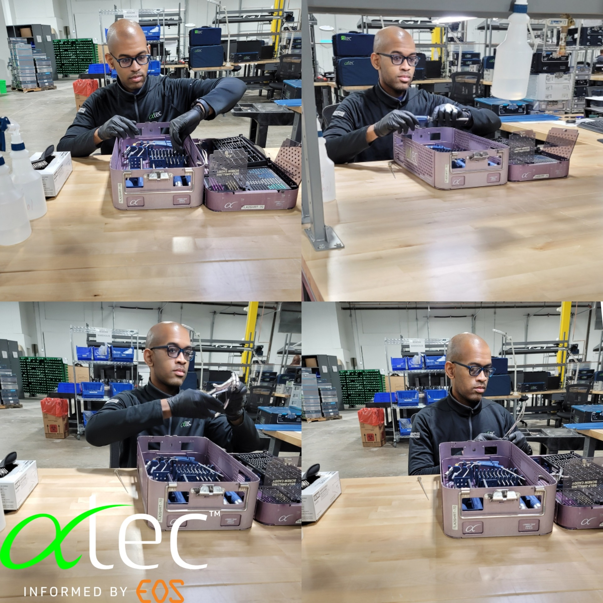
Building quality systems from the ground up in a startup manufacturing environment for spine surgery instruments.
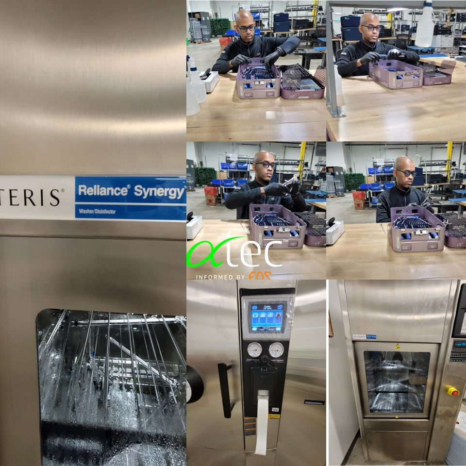
Expert implementation of sterilization protocols and contamination control in surgical instrument manufacturing.
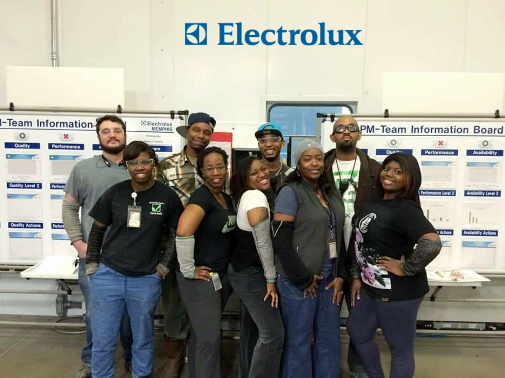
Statistical Process Control implementation with 15% reduction in testing cycle time at Electrolux North America.
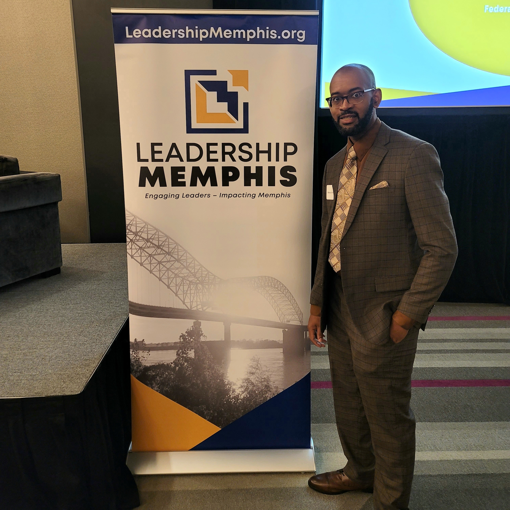
Participating in Leadership Memphis to develop community leadership skills and professional network.
Giving Back Through Service and Leadership
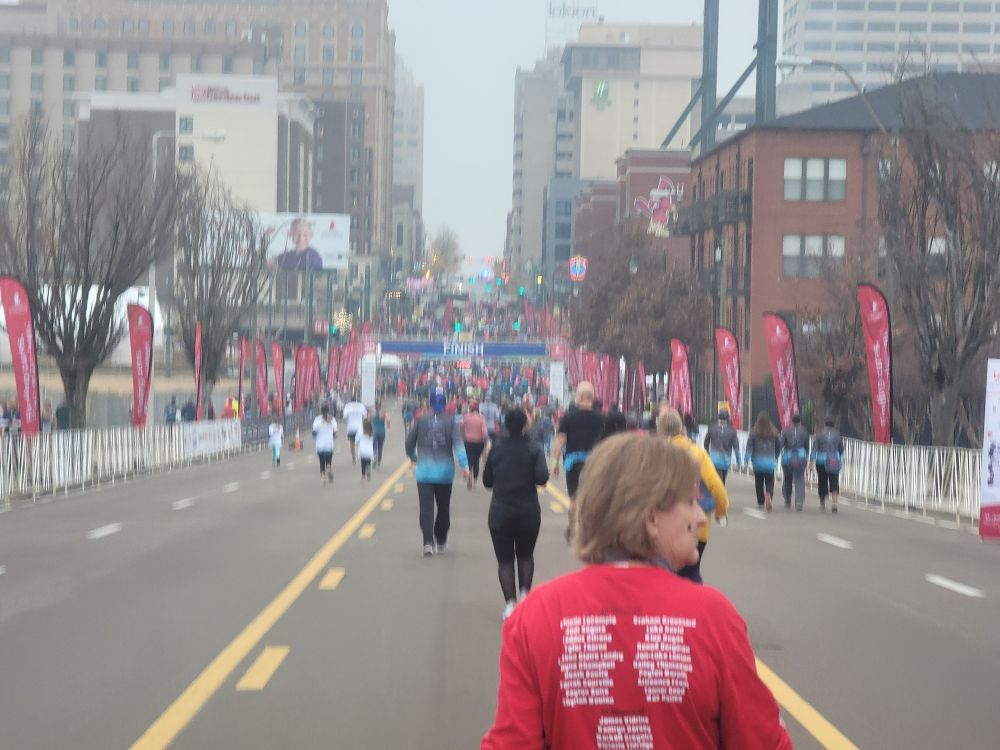
Dedicated volunteer supporting the mission to advance cures and means of prevention for pediatric catastrophic diseases through research and treatment.
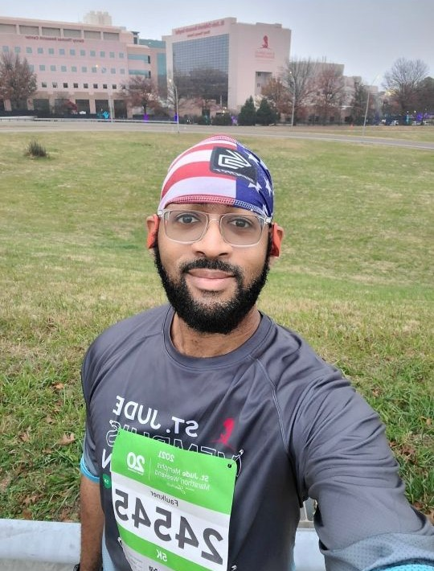
Hands-on participation in community building initiatives, applying operational excellence skills to support local charitable organizations.
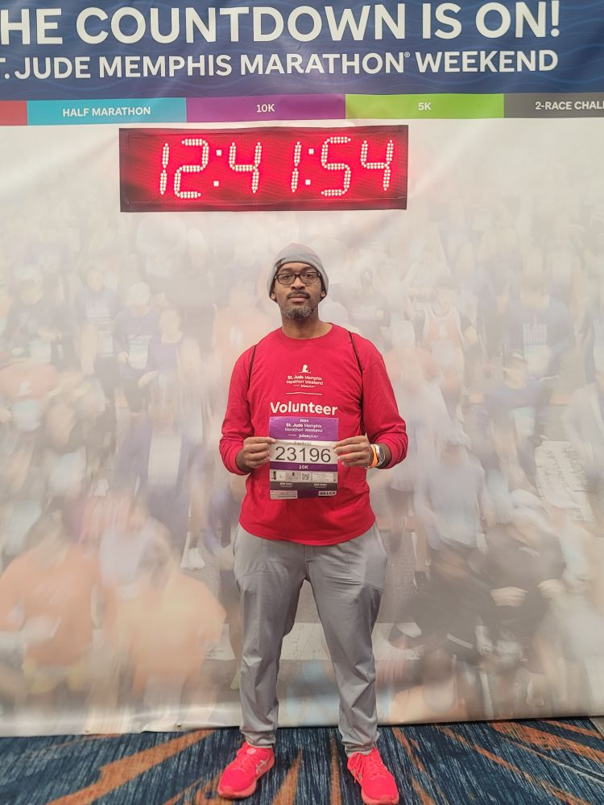
Active participant in St. Jude fundraising events, combining professional network and operational skills to support life-saving research.
Ready to bring proven operational excellence to your organization
faulkmar@yahoo.com
Professional inquiries welcome
(901) 652-3407
Available for interviews
Memphis, Tennessee
Open to relocation
linkedin.com/in/marcus-f-0a622b70
Professional network